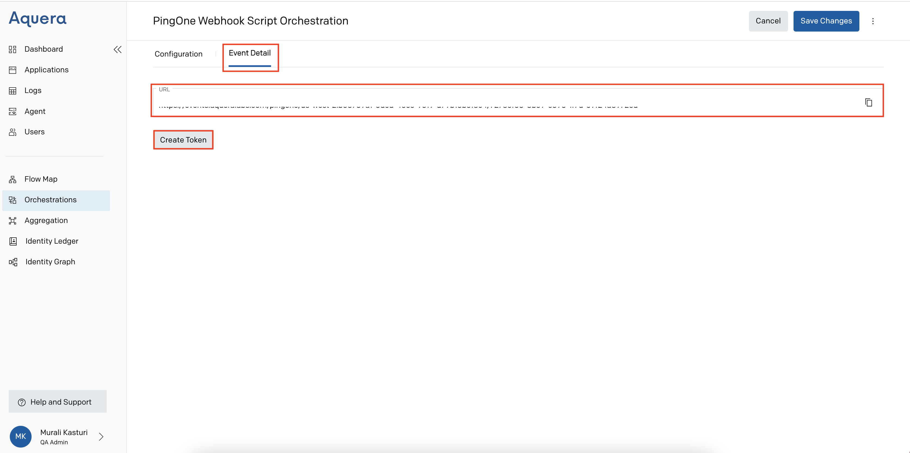
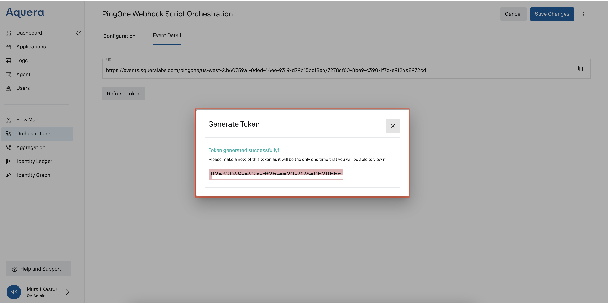
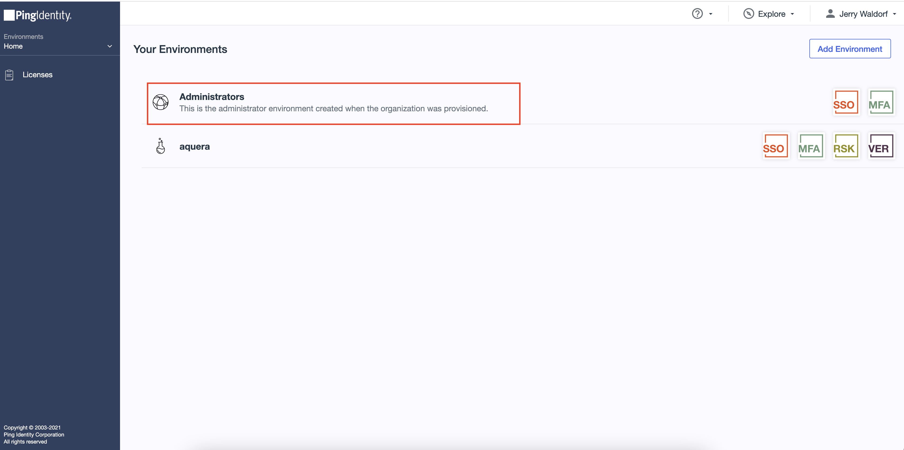
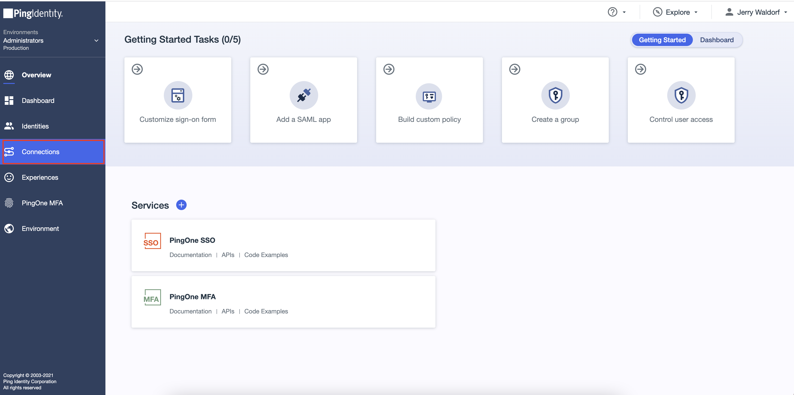
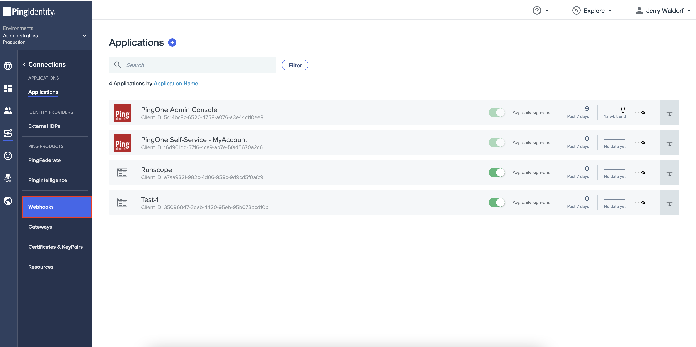
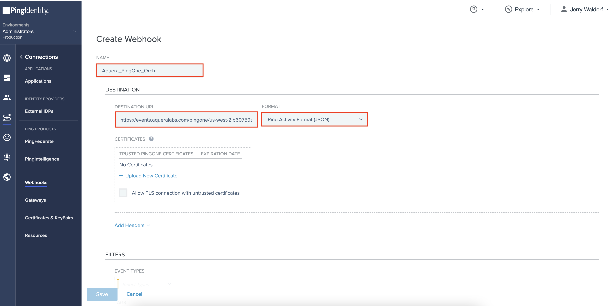
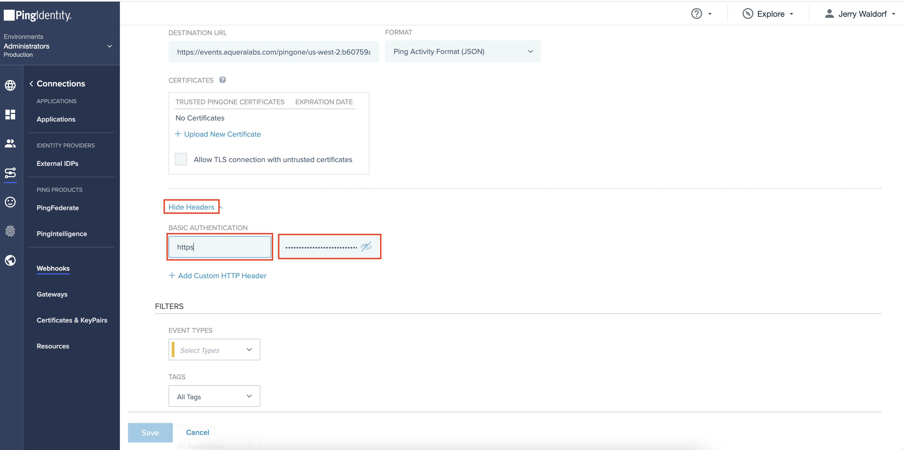
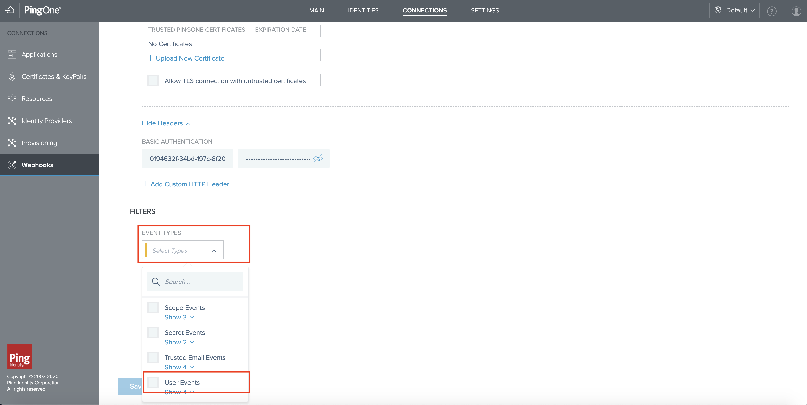
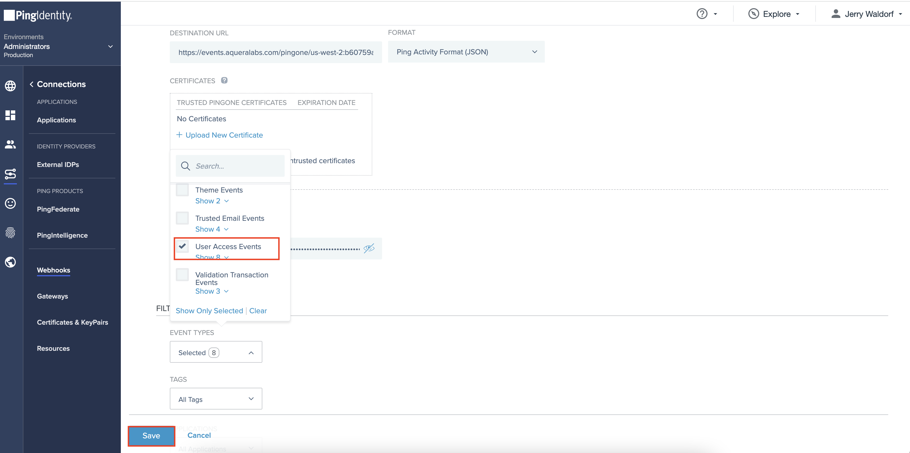
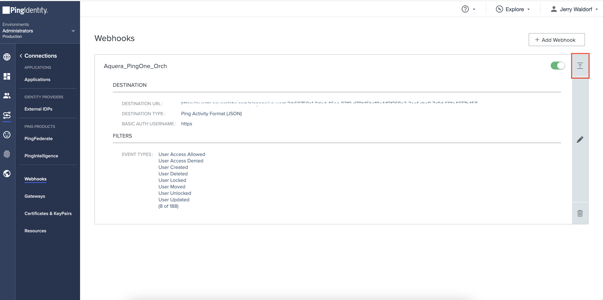

Synced from Zendesk Help Center
PingOne Webhook Script Orchestration
← Back to index
Jump To
Overview
Target Creation
Message Listener Orchestration
Overview
'PingOne Webhook Script' is a type of orchestration that helps update User Events such as Creating, Deleting, Moving, and Updating a User and reflecting the updates in the relevant channels. By using this orchestration, the User Events can be updated in one go.
This step-by-step demonstration will help Users executePingOne Webhook Script orchestration from Aquera to PingOne. Once this orchestration is completed, whenever the User Event at PingOne is changed, it will be reflected in Aquera's application automatically.
Target Creation
-
On the Aquera Admin Home page, navigate to the Orchestrations module and click Create Orchestration.
- Enter the following details on the Add Orchestration page:
- Enter a Name for the orchestration.
- Select PingOne Webhook Script from the orchestration type drop-down list and click Done.
- Select an Application that supports the orchestration from the dropdown in the Application field.
- Enter the Java script that suits your requirement under Script and click on Create on the top right.
- Go to Event Detail to see the URL. Click Token to view it. As this token appears only once, make a copy of it for future reference.

- Click Save Changes on the top right, so that the token will be assigned to the desired Event.

Message Listener Orchestration
- Login to PingOne with username and password and click Administrators.

- Click Connections from the left menu.

- Navigate to Webhooks.

- Click Add Webhook and provide a Name.
- Copy URL from the Aquera's Event Detail page (refer to Step-4 of this guide) and paste the same in the box prescribed for the URL.
- Select Json as the format.

- Click Add Headers
- Copy the token from the Aquera's Event Detail page and paste the same in the two boxes prescribed for Basic Authentication.

- Click the Event Type dropdown and select User Events.

- Check the User Access Events
- Ensure that User Created, User Deleted, User Moved, and User Updated are selected
- Click Save

User can see the newly created Webhook
- Click the dropdown next to the newly created Webhook
- The new Webhook can be edited and updated. The changes will be reflected on Aquera's page automatically.
